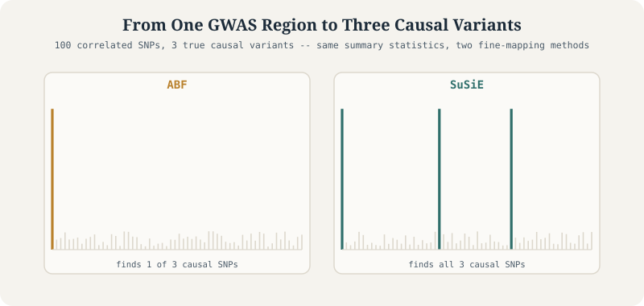

results <- data.frame(SNP = c("rs1","rs2","rs3","rs4","rs5"),
PIP = c(0.01, 0.04, 0.88, 0.05, 0.02))Statistical Fine-Mapping: From GWAS Signals to Causal Variants
Tutorial
Genetics
Fine-Mapping
GWAS
Statistical Genetics
Why a GWAS hit is a neighborhood, not an address – and how ABF and SuSiE narrow a correlated LD block down to the actual causal variants, worked end to end on simulated data.

The result this tutorial builds up to, from real simulated data: with three true causal variants hiding in one correlated region, ABF collapses onto a single dominant signal while SuSiE separates out all three.
Fine-Mapping SuSiE GWAS R
0.1 What Is Fine-Mapping?
GWAS has identified thousands of genomic regions associated with disease, but it typically doesn’t pinpoint the causal variant. Instead, GWAS flags a region containing many correlated variants, because of Linkage Disequilibrium (LD) — the non-random correlation between nearby genetic variants:
SNP A ---- SNP B ---- SNP C
^
causalIf SNP B is causal, A and C often look significant too, simply because they’re inherited together.
GWAS asks: Which region is associated with the trait? Fine-mapping asks: Which specific variant is most likely causing it?
A locus flagged by GWAS might contain 10, 100, or 1,000 SNPs with nearly identical p-values — GWAS alone cannot separate them.
0.2 The Goal: Posterior Inclusion Probabilities
Fine-mapping estimates \(P(\text{SNP is causal} \mid \text{data})\) for every variant in a region — a Posterior Inclusion Probability (PIP) — rather than just a p-value.
rs1 0.01 rs2 0.04 rs3 0.88 rs4 0.05 rs5 0.02rs3, with an 88% posterior probability, is the strongest causal candidate.
| GWAS | Fine-mapping | |
|---|---|---|
| Focus | p-values, association testing, genome-wide discovery | posterior probabilities, causal inference, variant prioritization |
| Role | first step | second step |
0.3 Why It Matters
A schizophrenia GWAS locus with 200 SNPs is too expensive to validate experimentally in full. Fine-mapping can shrink the candidate list to 3 variants, or even 1 — dramatically cutting the cost of functional genomics, drug target discovery, eQTL interpretation, colocalization, and precision medicine.
0.4 The Modern Statistical Genetics Pipeline
\[\text{Genotypes} \rightarrow \text{GWAS} \rightarrow \text{Significant Locus} \rightarrow \text{LD Matrix} \rightarrow \text{Fine-Mapping} \rightarrow \text{PIPs} \rightarrow \text{Credible Sets} \rightarrow \text{eQTL Analysis} \rightarrow \text{Colocalization} \rightarrow \text{Candidate Gene}\]
This backbone underlies large-scale projects like UK Biobank, FinnGen, the Psychiatric Genomics Consortium, and GTEx.
0.5 What Data Do You Need?
Three common scenarios determine what’s possible:
- Individual-level data — genotypes and phenotypes for every participant. Ideal: LD can be computed directly from the sample.
- Single-cohort GWAS summary statistics — only beta, SE, p-value. Requires an external LD reference panel (1000 Genomes, UK Biobank, TOPMed).
- Meta-analysis summary statistics — combined across cohorts with different LD structures; the hardest case, often requiring specialized methods (FastMap, CARMA, SLALOM).
0.6 The Central Role of LD
Two SNPs with \(r^2 = 0.95\) are almost perfectly correlated — statistically indistinguishable. High LD → large credible sets, low resolution. Low LD → small credible sets, high resolution. This is why ancestry-matched LD reference panels matter so much.
Foundational concepts for the rest of this tutorial: Linkage Disequilibrium, Causal Variants, Posterior Inclusion Probability, Credible Sets, LD Reference Panels, Summary Statistics, Individual-Level Data.
Key takeaways. Fine-mapping identifies likely causal variants within a GWAS locus. Because neighboring SNPs are correlated through LD, GWAS alone can’t determine which variant is responsible. Fine-mapping combines GWAS statistics with LD and Bayesian inference to assign causality probabilities, producing PIPs and credible sets — the bridge between GWAS discovery and downstream eQTL mapping, colocalization, functional validation, and drug target identification.
1 Linkage Disequilibrium, PIPs, and Credible Sets
Three concepts form the mathematical backbone of every fine-mapping method: Linkage Disequilibrium (LD), Posterior Inclusion Probabilities (PIPs), and Credible Sets.
1.1 Linkage Disequilibrium
LD measures the correlation between genetic variants — when two SNPs are inherited together more often than chance predicts, they’re in LD. If \(r^2(\text{SNP1}, \text{SNP2}) = 0.95\), knowing one variant almost perfectly predicts the other.
Why LD exists: during recombination, nearby variants are less likely to be separated, so physical proximity → co-inheritance → correlation → LD. The closer two SNPs sit, the stronger their LD tends to be.
Two common measures: \(D'\) (0–1, measures historical recombination) and \(r^2\) (0–1, measures correlation; \(r^2=0\) means no correlation, \(r^2=1\) means perfect correlation). Fine-mapping primarily uses \(r^2\).
Example 4×4 LD matrix, where SNP1–SNP2 and SNP3–SNP4 form two separate, tightly-correlated blocks:
ld <- data.frame(rbind(
c(1.00, 0.92, 0.15, 0.05),
c(0.92, 1.00, 0.18, 0.07),
c(0.15, 0.18, 1.00, 0.85),
c(0.05, 0.07, 0.85, 1.00)
))1.2 Posterior Inclusion Probability (PIP)
pip <- data.frame(SNP = c("rs1","rs2","rs3","rs4"),
PIP = c(0.03, 0.07, 0.82, 0.08))rs3 has an 82% probability of being causal.
PIPs are not p-values. A p-value measures evidence against the null hypothesis; a PIP measures probability of causality. \(p = 1\times10^{-20}\) does not mean “99.999999999999999% chance causal” — that’s a common and incorrect conflation.
Multiple causal variants are common. Many loci contain more than one causal SNP (e.g., variants 20, 39, and 68 all influencing the same trait) — exactly the scenario that motivated methods like SuSiE.
1.3 Credible Sets
A credible set is a group of variants that collectively contain the causal SNP with high probability — most commonly a 95% credible set: a 95% probability the causal SNP lies somewhere in the set, not a 95% probability for each individual member.
Constructing one: sort by PIP, then accumulate until crossing the threshold.
| SNP | PIP | Cumulative |
|---|---|---|
| rs1 | 0.60 | 0.60 |
| rs2 | 0.25 | 0.85 |
| rs3 | 0.08 | 0.93 |
| rs4 | 0.04 | 0.97 |
| rs5 | 0.03 | 1.00 |
The 95% credible set is {rs1, rs2, rs3, rs4} — the smallest prefix exceeding 95%.
Interpreting size: a single-SNP set (e.g. {rs25}) means excellent resolution; a 3-SNP set is reasonable; a 50-SNP set means poor resolution.
1.4 What Determines Credible Set Size?
- Sample size — larger N → higher power → smaller credible sets.
- LD structure — high LD → large credible sets (SNPs statistically indistinguishable); low LD → small credible sets.
- Effect size — larger effects → higher PIPs; smaller effects → lower PIPs.
Ideal: one SNP at PIP = 0.98, credible set = {that SNP}. Difficult: five SNPs each around PIP 0.16–0.20, credible set = all five, reflecting genuine uncertainty rather than method failure.
1.5 Why Fine-Mapping Is Bayesian
Bayesian methods directly answer “how likely is each SNP to be causal?” — exactly the question fine-mapping needs. This is why nearly every modern method (ABF, SuSiE, FINEMAP, CARMA, CAVIAR) is Bayesian.
Key takeaways. LD is the correlation structure among nearby variants and the primary reason GWAS can’t identify causal variants directly. Fine-mapping combines LD with GWAS statistics to estimate PIPs. Because uncertainty remains, methods report credible sets — groups of variants that jointly contain the causal SNP with high probability. Sample size, effect size, and LD structure strongly influence both PIPs and credible set size.
2 Bayesian Fine-Mapping and Approximate Bayes Factors (ABF)
GWAS cannot tell us which of several significant SNPs is causal — it only tells us how unlikely the data would be under no association. Fine-mapping needs something different: \(P(\text{causal} \mid \text{data})\). This is where Bayesian statistics comes in, and Approximate Bayes Factors (ABF) — Jon Wakefield’s method — is one of the earliest and still most widely used solutions.
2.1 Frequentist vs. Bayesian Thinking
The frequentist approach tests \(H_0: \beta = 0\) and computes \(P(\text{data} \mid \text{null})\) — a p-value. The Bayesian approach compares “SNP is causal” against “SNP is not causal” and computes \(P(\text{causal} \mid \text{data})\) directly — exactly the quantity we want.
2.2 Bayes Factors
A Bayes Factor compares two models: \(\text{BF} = P(\text{data} \mid \text{causal}) / P(\text{data} \mid \text{null})\). BF = 1 means no preference; BF = 10 means the data are 10× more likely under the causal model; BF = 100 is strong evidence for causality.
“Approximate” because exact Bayes Factors are expensive to compute. Wakefield’s approximation needs only the effect estimate (\(\beta\)) and its standard error (SE) — both routinely available in GWAS summary statistics, with no individual-level data required.
2.3 Wakefield’s ABF Formula
For each SNP, compute \(Z = \beta/\text{SE}\) and \(V = \text{SE}^2\). Choose a prior variance \(W\) (commonly 0.01–0.04, representing your prior belief about plausible effect sizes — smaller \(W\) expects smaller effects). Then:
\[r = \frac{W}{W+V}, \qquad \log\text{BF} = \frac{\log(1-r) + rZ^2}{2}\]
2.4 From Bayes Factors to PIPs
Normalize the BFs across all SNPs in the region: \(\text{PIP}_i = \text{BF}_i / \sum_j \text{BF}_j\).
import numpy as np, pandas as pd
beta = np.array([0.05, 0.15, 0.09])
se = np.array([0.03, 0.03, 0.03])
W = 0.04
z = beta / se
V = se**2
r = W / (W + V)
lbf = (np.log(1-r) + r*(z**2)) / 2
bf = np.exp(lbf)
pip = bf / bf.sum()
results = pd.DataFrame({"Beta": beta, "SE": se, "Z": z, "BF": bf, "PIP": pip})For example, three SNPs with BFs 3, 50, and 10 (total 63) give PIPs of 0.048, 0.794, and 0.159 — SNP2 is the strongest candidate.
2.5 The Single-Causal-Variant Assumption
ABF assumes exactly one causal variant per locus — a simplification that breaks down whenever a locus actually has 2, 3, 5, or more independent causal signals (variants 20, 39, and 68, say). ABF then splits and dilutes the true signals across correlated SNPs, since it can only ever “explain” the locus with one variant. This limitation directly motivated SuSiE, FINEMAP, CAVIAR, and CARMA.
2.6 Strengths and Limitations
Strengths: fast, simple, requires only summary statistics, no LD matrix needed, computationally efficient for large GWAS. Limitations: single-causal-variant assumption, cannot separate multiple signals, can be confused by strong LD, lower resolution in complex regions.
ABF also underlies coloc.abf, used for testing whether GWAS and eQTL signals share a causal variant (Part 12) — carrying the same single-variant assumption into colocalization.
\[\text{GWAS Summary Statistics} \rightarrow Z \rightarrow \text{ABF} \rightarrow \text{Bayes Factors} \rightarrow \text{Normalize} \rightarrow \text{PIPs} \rightarrow \text{Credible Sets}\]
Key takeaways. ABF was among the first practical Bayesian fine-mapping methods, converting GWAS summary statistics into PIPs by normalizing Bayes Factors across SNPs. It’s fast and requires only summary statistics, but its core limitation — assuming a single causal variant per locus — motivated the development of multi-signal methods like SuSiE.
3 SuSiE: Sum of Single Effects
ABF assumes one causal variant per locus, but real GWAS regions routinely contain 2, 3, 5+ independent causal variants. SuSiE — one of the most widely used fine-mapping methods today — was built to handle exactly this.
3.1 The Core Idea
Instead of fitting one signal, SuSiE models the phenotype as a sum of single effects:
\[\text{Phenotype} = \text{Effect}_1 + \text{Effect}_2 + \text{Effect}_3 + \dots, \qquad y = Xb + e\]
where \(y\) is the phenotype, \(X\) the genotype matrix, \(b\) the SNP effects, and \(e\) noise. Rather than fitting all SNP effects simultaneously, SuSiE decomposes the model into separate single-effect components — each one identifying one potential causal signal (e.g. Signal 1 → variant 39, Signal 2 → variant 20, Signal 3 → variant 68) — then combines them.
The key parameter L sets the maximum number of causal signals to search for (e.g. L = 4 allows up to 4 independent signals).
3.2 What SuSiE Produces
For every SNP, a PIP (e.g. rs20 = 0.95, rs39 = 0.98, rs68 = 0.92 — all three likely causal, unlike a single p-value). And for each independent signal, a credible set — sometimes tight ({rs20} alone, excellent resolution), sometimes broader ({rs20, rs21, rs22}, meaning one of these is probably causal but the data can’t distinguish which).
3.3 Running SuSiE in R
Illustrative syntax – the objects below (GWAS_df, N, in_sample_LD, y) are built from scratch in the worked example later in this tutorial.
library(susieR)
susie_results <- susie_rss(
bhat = GWAS_df$beta_marginal,
shat = GWAS_df$se_marginal,
n = N,
R = in_sample_LD,
var_y = var(y),
L = 4,
estimate_residual_variance = TRUE
)Unlike ABF, SuSiE requires an LD matrix — it has to know which SNPs are correlated in order to separate distinct signals.
susie_plot(susie_results, y = "PIP")3.4 When SuSiE Works Best
Large sample size (more information), lower LD (better separation between causal variants), strong effects (higher PIPs), and an accurate, ancestry-matched LD matrix.
Common beginner mistake: assuming the lead SNP (smallest p-value) is automatically the causal SNP. SuSiE often shows lead SNP ≠ causal SNP, because the association signal can be distributed across correlated variants.
3.5 SuSiE vs. ABF
| Feature | ABF | SuSiE |
|---|---|---|
| Bayesian | Yes | Yes |
| Uses summary statistics | Yes | Yes |
| Uses LD matrix | No | Yes |
| Multiple signals | No | Yes |
| Credible sets | Limited | Yes |
| Modern standard | No | Yes |
SuSiE became popular for combining accurate PIPs, multiple-signal detection, credible sets, computational efficiency, summary-statistics compatibility, and natural integration with colocalization.
Key takeaways. SuSiE (Sum of Single Effects) is a Bayesian method that models several independent causal signals simultaneously, rather than assuming a single causal SNP. It needs GWAS summary statistics plus an LD matrix, and produces PIPs and credible sets per signal — now one of the most widely used fine-mapping methods because it handles the complexity of real genetic loci.
4 Running a Complete Fine-Mapping Analysis Step-by-Step
With the concepts and methods in hand, here’s a complete, self-contained workflow — simulate a locus with known causal variants, run GWAS, then compare ABF against SuSiE.
\[\text{Simulate Genotypes} \rightarrow \text{Simulate Phenotype} \rightarrow \text{GWAS} \rightarrow \text{ABF} \rightarrow \text{SuSiE} \rightarrow \text{Interpret PIPs \& Credible Sets}\]
library(MASS) # data simulation
library(susieR) # fine-mapping
library(ggplot2) # visualizationSimulate a genomic region of p <- 100 SNPs with moderate LD (off-diagonal 0.3, diagonal 1):
p <- 100
LD <- matrix(0.3, nrow = p, ncol = p)
diag(LD) <- 1Simulate genotypes for N <- 1000 individuals using the LD matrix as the covariance structure:
set.seed(4)
N <- 1000
X <- mvrnorm(n = N, mu = rep(0, p), Sigma = LD)
# dim(X) -> 1000 x 100Define L <- 3 true causal SNPs, chosen at random (e.g. variants 68, 39, 1 — the workshop’s exact setup):
set.seed(1)
L <- 3
causal_ind <- sample(1:p, L, replace = FALSE)Assign effect sizes for a target heritability, e.g. h2g <- 0.1:
h2g <- 0.1
per_snp_h2g <- h2g / L
set.seed(5)
effect_sizes <- rnorm(L, mean = 0, sd = sqrt(per_snp_h2g))
beta <- rep(0, p)
beta[causal_ind] <- effect_sizes
genetic_effect <- X %*% betaSimulate the phenotype by adding environmental noise:
var_g <- var(genetic_effect)
sigma_squared <- ifelse(1 - var_g > 0.05, 1 - var_g, 0.1)
set.seed(105)
epsilon <- rnorm(N, mean = 0, sd = sqrt(sigma_squared))
y <- as.numeric(genetic_effect + epsilon)Run GWAS — one univariate regression per SNP, producing a full summary-statistics table:
GWAS_df <- data.frame(beta = numeric(p), se = numeric(p), z = numeric(p), pval = numeric(p))
for (i in 1:p) {
fit <- summary(lm(y ~ X[,i] - 1))
beta_hat <- fit$coefficients[1, "Estimate"]
se_hat <- fit$coefficients[1, "Std. Error"]
z <- beta_hat / se_hat
p_val <- pchisq(z^2, df = 1, lower.tail = FALSE)
GWAS_df[i, ] <- c(beta_hat, se_hat, z, p_val)
}Plotting -log10(pval) against SNP position gives a regional Manhattan plot; the tallest peaks are candidate causal variants.
Apply ABF fine-mapping using the Wakefield formula from Part 3, implemented as a reusable function:
run_abf <- function(beta, stderr, W = 0.04) {
z <- beta / stderr
V <- stderr^2
r <- W / (W + V)
lbf <- (log(1-r) + r*(z^2)) / 2
lbf_max <- max(lbf)
denom <- lbf_max + log(sum(exp(lbf - lbf_max)))
exp(lbf - denom)
}
GWAS_df$PIP_ABF <- run_abf(GWAS_df$beta, GWAS_df$se)ABF will often strongly prioritize just one signal, even when several causal variants exist.
Run SuSiE, using an in-sample LD matrix computed directly from the simulated genotypes:
R <- cov(scale(X))
susie_results <- susie_rss(
bhat = GWAS_df$beta, shat = GWAS_df$se, n = N, R = R,
var_y = var(y), L = 4, estimate_residual_variance = TRUE
)
GWAS_df$PIP_SuSiE <- susie_results$pip
head(GWAS_df[order(-GWAS_df$PIP_SuSiE), ])HINT: For estimate_residual_variance = TRUE, please check that R is the "in-sample" LD matrix; that is, the correlation matrix obtained using the exact same data matrix X that was used for the other summary statistics. Also note, when covariates are included in the univariate regressions that produced the summary statistics, also consider removing these effects from X before computing R.
| beta | se | z | pval | PIP_ABF | PIP_SuSiE | |
|---|---|---|---|---|---|---|
| <dbl> | <dbl> | <dbl> | <dbl> | <dbl> | <dbl> | |
| 1 | -0.23391752 | 0.02955646 | -7.914261 | 2.487253e-15 | 9.999993e-01 | 1.000000e+00 |
| 39 | 0.11271078 | 0.03016101 | 3.736970 | 1.862512e-04 | 4.604485e-11 | 1.000000e+00 |
| 68 | -0.17209840 | 0.02969970 | -5.794617 | 6.847711e-09 | 6.692374e-07 | 9.999861e-01 |
| 51 | -0.11439249 | 0.03180954 | -3.596169 | 3.229380e-04 | 2.881971e-11 | 2.692740e-06 |
| 48 | -0.10034456 | 0.03015366 | -3.327774 | 8.754293e-04 | 1.120259e-11 | 2.578888e-06 |
| 32 | -0.08948059 | 0.03040323 | -2.943127 | 3.249148e-03 | 3.467398e-12 | 1.484153e-06 |
A PIP_SuSiE plot typically shows several distinct peaks, corresponding to the multiple simulated causal variants — unlike ABF’s single dominant peak.
Examine credible sets, the most important SuSiE output:
susie_results$sets$cs
# $L1: 1 $L2: 39 $L3: 68- $L1
- 1
- $L2
- 39
- $L3
- 68
Three independent signals, correctly located at variants 39, 20, and 68.
4.1 ABF vs. SuSiE, Head to Head
Where ABF may identify only variant 1, SuSiE correctly recovers variants 1, 39, and 68 — because it allows multiple causal variants. This is precisely why SuSiE has become the preferred modern approach.
\[\text{Simulate} \rightarrow \text{GWAS} \rightarrow \text{ABF} \rightarrow \text{PIP Estimates} \rightarrow \text{SuSiE} \rightarrow \text{Multiple Signals} \rightarrow \text{Credible Sets} \rightarrow \text{Candidate Causal Variants}\]
Key takeaways. A complete fine-mapping analysis starts from GWAS summary statistics and an LD matrix. ABF converts these into posterior probabilities under a single-causal-variant assumption; SuSiE extends this to multiple independent signals in the same locus. The outputs — PIPs and credible sets — feed directly into downstream eQTL and colocalization analyses.
5 Understanding Credible Sets in Practice
After running SuSiE, researchers often jump straight to PIPs — but the most informative output is usually the credible set itself, since most real GWAS loci don’t resolve to a single variant.
5.1 Why We Need Them
A single SNP at PIP = 0.98 makes life easy. But most loci look more like:
| SNP | PIP |
|---|---|
| rs39 | 0.32 |
| rs40 | 0.28 |
| rs41 | 0.22 |
| rs42 | 0.10 |
| rs43 | 0.08 |
Now which SNP is truly causal is genuinely unclear — rather than pretending to know, Bayesian fine-mapping represents that uncertainty explicitly via the credible set.
A 95% credible set means there’s a 95% probability the causal SNP lies somewhere in the set — not a 95% probability attached to each member individually.
5.2 Worked Construction
| Step | Add | Cumulative |
|---|---|---|
| 1 | rs39 (0.45) | 0.45 |
| 2 | rs40 (0.25) | 0.70 |
| 3 | rs41 (0.15) | 0.85 |
| 4 | rs42 (0.08) | 0.93 |
| 5 | rs43 (0.04) | 0.97 |
The 95% credible set = {rs39, rs40, rs41, rs42, rs43}. This does not mean all five are causal — it means one (or more) of them likely is, but the data can’t distinguish which.
Resolution spectrum: ideal = {rs39} alone (excellent, near-certain localization); moderate = {rs39, rs40, rs41} (still useful — 3 variants to validate instead of 500); poor = 50–100 SNPs (data can’t isolate the causal variant at all).
5.3 Why Large Credible Sets Occur
- High LD — SNPs with \(r^2 > 0.95\) are statistically indistinguishable.
- Small sample size — less information, more diffuse PIPs, larger sets. (N=500 vs N=50,000 makes a dramatic difference.)
- Weak genetic effects — small \(\beta\) is harder to localize than large \(\beta\).
Excellent fine-mapping: rs39 = 0.97, everything else ≈ 0.01 → credible set = {rs39}, near-perfect localization. Difficult fine-mapping: five SNPs each around 0.13–0.25 → credible set = all five, strong genuine uncertainty.
5.4 Multiple Credible Sets
Modern loci often contain multiple signals — Signal 1: CS1={rs20}, Signal 2: CS2={rs39, rs40}, Signal 3: CS3={rs68} — exactly what SuSiE was designed to discover. Each credible set corresponds to a separate causal signal:
susie_results$sets$cs
# $L1: 1 $L2: 39 $L3: 68- $L1
- 1
- $L2
- 39
- $L3
- 68
5.5 Coverage Trade-Off
Most studies use 95% coverage, but 80%, 90%, and 99% are all used. Higher coverage (99%) gives more certainty but larger sets; lower coverage (80%) gives smaller sets but greater risk of missing the true causal SNP entirely.
5.6 Credible Sets ≠ Lead SNPs
A “lead SNP” (smallest p-value, or highest PIP) is a single point estimate; the credible set captures the uncertainty around it. These are not interchangeable, and conflating them is a common mistake.
What a fine-mapping study should report: lead SNP, PIP, credible set, credible set size, method used, LD reference panel. Example:
Lead variant rs39, PIP 0.94, 95% credible set {rs39, rs40}, size 2.
5.7 Biological Interpretation
Credible set size = 1 → strong candidate for CRISPR/reporter/functional validation. Credible set size = 50 → needs more data (larger GWAS, better LD panel, eQTL analysis, colocalization, functional annotations) before it can be refined further.
Key takeaways. Credible sets quantify uncertainty by reporting a group of variants that jointly contain the causal SNP with a specified probability (typically 95%), rather than pretending to identify a single answer. Small sets mean strong resolution; large sets reflect high LD, limited sample size, or weak effects. Credible sets are often more informative than lead SNPs precisely because they represent uncertainty explicitly.
6 The Impact of Sample Size, Effect Size, and LD on Resolution
“Why is my credible set so large? Why are my PIPs so low? Why can’t I identify the causal SNP?” The answer almost always comes down to three factors: sample size, linkage disequilibrium, and effect size.
Resolution refers to how precisely a causal variant can be localized. Excellent: 95% credible set = 1 SNP. Poor: 95% credible set = 50 SNPs. The goal is always small credible sets with high PIPs.
6.1 Factor 1: Sample Size
The single most important factor. Standard error scales as \(\text{SE} \propto 1/\sqrt{N}\), so larger \(N\) → smaller SE → larger Z-scores → higher PIPs.
Example: true \(\beta = 0.10\). At \(N=500\): SE ≈ 0.08, Z ≈ 1.25 (weak evidence). At \(N=50{,}000\): SE ≈ 0.01, Z ≈ 10 (very strong evidence). Increasing sample size 10× often improves fine-mapping resolution dramatically — sharper, less noisy signal, smaller credible sets.
6.2 Factor 2: Linkage Disequilibrium
Fine-mapping is easiest when SNPs are weakly correlated. At \(r^2 = 0.05\), each SNP behaves independently and a causal signal is easy to pinpoint. At \(r^2 = 0.99\), neighboring SNPs look almost statistically identical (e.g. rs39 at \(p=1\times10^{-12}\) and rs40 at \(p=2\times10^{-12}\)) — the model simply cannot tell them apart, producing large credible sets.
Resolution spectrum by LD: low LD → {rs39} (excellent); moderate LD → {rs39, rs40, rs41} (acceptable); very high LD → 25 SNPs (poor). Even a huge sample size (\(N=100{,}000\)) can’t fully overcome severe LD in a locus — more data helps, but doesn’t eliminate the fundamental statistical limitation.
Ancestry matters here: European-ancestry LD blocks tend to be long (harder to resolve); African-ancestry LD blocks tend to be shorter (often better resolution) — one reason multi-ancestry fine-mapping has become popular.
6.3 Factor 3: Effect Size
Large effects (\(\beta = 0.25\)) → large Z-score → high PIP → often a single-SNP credible set. Small effects (\(\beta = 0.01\)) → small Z-score → diffuse PIPs → large credible set. Traits differ in genetic architecture: LDL cholesterol often has large-effect variants; educational attainment is dominated by tiny effects — so some traits are inherently easier to fine-map than others. Lower heritability (\(h^2 = 0.01\) vs. \(0.10\)) weakens signals the same way.
6.4 Interaction Between Factors
Best case: large sample size + low LD + large effects → tiny credible sets, high PIPs. Worst case: small sample size + high LD + tiny effects → huge credible sets, low PIPs.
6.5 Diagnosing Poor Fine-Mapping
When results look weak, check: Is sample size large enough? Is LD too high? Are effect sizes too small? Is the LD reference panel the right ancestry?
Common beginner mistake: interpreting a 50-SNP credible set as “fine-mapping failed.” Usually the method is working correctly — the data simply doesn’t contain enough information to distinguish the variants. Fine-mapping quantifies uncertainty; it doesn’t eliminate it.
Key takeaways. Fine-mapping resolution is driven primarily by sample size, LD, and effect size. Larger samples and stronger effects sharpen PIPs; high LD makes neighboring variants statistically indistinguishable and enlarges credible sets. No method can fully overcome severe LD or limited information — understanding these limits is essential for realistic interpretation and avoiding overconfidence in causal variant claims.
7 Fine-Mapping with Individual-Level Data vs. Summary Statistics
The first question in any fine-mapping project is: what data do I actually have? The answer determines which methods you can use, how accurate your results will be, how LD gets estimated, and whether colocalization is even possible.
7.1 Two Main Types of Data
Individual-level data — genotypes, phenotypes, and covariates per person:
| Person | SNP1 | SNP2 | SNP3 | Phenotype |
|---|---|---|---|---|
| 1 | 0 | 1 | 2 | 3.2 |
| 2 | 1 | 1 | 0 | 1.7 |
| 3 | 2 | 0 | 1 | 4.5 |
Summary statistics only — no individual genotypes:
| SNP | Beta | SE | P-value |
|---|---|---|---|
| rs1 | 0.12 | 0.03 | 1e-8 |
| rs2 | 0.10 | 0.03 | 5e-7 |
| rs3 | 0.02 | 0.04 | 0.40 |
Large biobanks (UK Biobank, FinnGen, deCODE, iPSYCH) usually release only summary statistics — raw genotype sharing raises privacy, storage, and regulatory concerns.
7.2 Individual-Level Data Workflow (Gold Standard)
\[\text{Raw Genotypes} \rightarrow \text{QC} \rightarrow \text{GWAS} \rightarrow \text{Compute In-Sample LD} \rightarrow \text{Fine-Mapping}\]
R <- cov(scale(X)) # X = genotype matrix from your own samplesThis produces in-sample LD — LD computed from exactly the individuals in your GWAS — the most accurate LD possible, and considered the gold standard.
7.3 Summary Statistics Workflow
\[\text{Summary Statistics} \rightarrow \text{External LD Panel} \rightarrow \text{Fine-Mapping}\]
Common reference panels: 1000 Genomes, UK Biobank, TOPMed, HRC. You must match the reference panel’s ancestry to your GWAS cohort — e.g. European-ancestry GWAS → 1000 Genomes Europeans.
7.4 Why LD Matching Is Critical
If your GWAS is Finnish but you estimate LD from an African-ancestry panel, the LD structure will genuinely differ — e.g. true GWAS LD between rs39/rs40 might be \(r^2=0.95\) while the mismatched reference shows \(r^2=0.30\). That mismatch can cause false signals, incorrect PIPs, wrong credible sets, and failed colocalization — one of the most common causes of unreliable fine-mapping. SuSiE in particular needs good LD, since it relies on knowing exactly which SNPs are correlated to separate multiple signals.
Methods requiring LD: SuSiE, FINEMAP, CAVIAR, CARMA. Methods that don’t: ABF (needs only beta and SE) — one reason it remains useful as a fallback.
7.5 Single-Cohort vs. Meta-Analysis
Single-cohort (e.g. FinnGen or UK Biobank alone): ancestry-matched LD → fine-mapping is generally straightforward.
Meta-analysis (European + Finnish + Japanese + African cohorts combined): each cohort has different LD, so a single LD matrix no longer represents the pooled data accurately. This motivated specialized meta-analysis methods. Common strategies: fine-map each cohort separately then compare/integrate results, or use methods purpose-built for heterogeneous LD (FastMap and related approaches).
7.6 Multi-Ancestry Fine-Mapping
Different populations have different LD block lengths — combining ancestries can dramatically improve resolution, since a variant tightly linked to several others in a European LD block might sit alone in an African LD block. Example: a European-only GWAS gives a credible set of 40 SNPs, but adding African-ancestry data narrows it to 5.
7.7 Data-Type Ranking
| Tier | Data |
|---|---|
| Best | Individual-level data + in-sample LD |
| Good | Summary statistics + matched LD panel |
| Risky | Summary statistics + poorly matched LD |
| Worst | Summary statistics + no LD information |
Practical advice: use in-sample LD whenever possible; always match ancestry between GWAS and LD panel; avoid mixing populations unless using methods explicitly designed for multi-ancestry analysis.
This all matters even more for colocalization later: coloc.susie depends on accurate fine-mapping, and poor LD estimation can cause both false and missed colocalization. Good LD = good fine-mapping = good colocalization.
Key takeaways. Data availability determines your entire fine-mapping strategy. Individual-level data gives the best results because LD is computed directly from the study sample. Summary-statistics-only analyses require an external, ancestry-matched LD reference panel — mismatch here is one of the most common sources of unreliable results in modern fine-mapping.
8 Major Fine-Mapping Methods — ABF, CAVIAR, FINEMAP, SuSiE, CARMA, FastMap
The core concepts (LD, PIPs, credible sets, Bayesian inference, multiple causal variants) are now in place — the natural next question is which method to actually use. Choice depends on available data, LD information, study design, and computational resources.
Historical evolution: \(\text{ABF} \rightarrow \text{CAVIAR} \rightarrow \text{FINEMAP} \rightarrow \text{SuSiE} \rightarrow \text{CARMA} \rightarrow \text{FastMap}\) — each generation addressed limitations of the last.
| Method | Main idea | Inputs | Multiple signals? | Needs LD? | Notes |
|---|---|---|---|---|---|
| ABF | Assume one causal variant; compute Bayes Factors per SNP, normalize to posteriors | Beta, SE | No | No | Fast, simple, minimal inputs; can’t separate multiple signals; best when no trustworthy LD exists or for quick exploratory passes. Basis of coloc.abf. |
| CAVIAR | Models several causal SNPs simultaneously via Z-scores + LD | Z-scores, LD matrix | Yes | Yes | One of the first methods beyond ABF; accounts for LD and multiple variants, but computationally expensive in large regions. Historically important — inspired later methods. |
| FINEMAP | Bayesian model selection: searches causal-variant configurations (e.g. {rs39}, {rs20+rs39}, {rs20+rs39+rs68}) and finds which best explains the data | Summary statistics, LD matrix | Yes | Yes | Fast, accurate, scalable for large GWAS/biobank studies; widely used; needs good LD or performance degrades. |
| SuSiE | Sum of single effects — models phenotype as several independent signals rather than one | Summary statistics + LD, or individual-level data | Yes | Yes | Excellent multiple-signal handling, interpretable credible sets, computationally efficient, integrates naturally with colocalization. Sensitive to LD mismatch. The current default for most researchers. |
| CARMA | CAusal variant identification with Allelic heterogeneity and outliers — explicitly models outlier/artifact SNPs (genotyping errors, imputation artifacts) | Summary statistics, LD matrix | Yes | Yes | Robust to problematic data; more computationally intensive and harder to interpret. Best for uncertain data quality or large meta-analyses prone to artifacts. |
| FastMap | Efficient approximations built for biobank-scale data (millions of individuals, thousands of loci) | Summary statistics, LD | Yes | Yes | Very fast, highly scalable; newer and less extensively validated than SuSiE/FINEMAP. Best for massive biobank or meta-analysis fine-mapping. |
8.1 Choosing a Method
| Your situation | Recommended method |
|---|---|
| Only beta/SE, no LD matrix | ABF |
| Summary statistics + good LD | SuSiE or FINEMAP |
| Suspected outliers/artifacts | CARMA |
| Very large-scale (biobank) analysis | FastMap |
| Planning colocalization afterward | SuSiE (integrates with coloc.susie) |
Current consensus: ask most statistical geneticists for the default fine-mapping method today and the answer is SuSiE — it offers multi-signal modeling, credible sets, PIPs, strong theoretical grounding, and mature software support. FINEMAP remains extremely popular too, often run alongside SuSiE.
Practical recommendation summary: individual-level data → SuSiE; summary statistics + good LD → SuSiE or FINEMAP; no LD available → ABF; suspected data artifacts → CARMA; massive biobank analyses → FastMap.
All these methods answer the same underlying question — “which variants are most likely causal?” — differing mainly in their assumptions, computational strategy, treatment of multiple signals, and robustness to imperfect data. The shared output vocabulary — PIPs and credible sets — is the common language of modern fine-mapping.
Key takeaways. ABF is simple and useful without LD but assumes a single causal variant. CAVIAR pioneered multi-variant modeling. FINEMAP and SuSiE are the current workhorses for multi-signal fine-mapping with credible sets. CARMA adds robustness to outliers; FastMap trades some validation maturity for speed at biobank scale. In practice, SuSiE and FINEMAP dominate when reliable LD is available.
9 The Fine-Mapping Decision Tree — Choosing the Correct Pipeline
For beginners, the hard part isn’t running fine-mapping software — it’s choosing the right workflow before you even start. Rather than picking a method first, start by asking: what data do we actually have?
\[\text{Available Data} \rightarrow \text{Appropriate LD} \rightarrow \text{Fine-Mapping Method} \rightarrow \text{Credible Sets} \rightarrow \text{Biological Interpretation}\]
9.1 Step 1: Do You Have Individual-Level Data?
That means genotypes and phenotypes for each participant — PLINK files (.bed/.bim/.fam) or VCF + phenotype files. If yes, follow Branch A; if no, follow Branch B.
9.2 Branch A: Individual-Level Data
The ideal case (UK Biobank, FinnGen, iPSYCH, All of Us, when individual-level access is granted) — you can compute in-sample LD directly:
\[\text{Individual-Level Data} \rightarrow \text{QC} \rightarrow \text{GWAS} \rightarrow \text{Compute In-Sample LD} \rightarrow \text{SuSiE} \rightarrow \text{Credible Sets}\]
Single cohort: straightforward — in-sample LD, then SuSiE. Multiple cohorts (European + African + Asian, each with full genotypes): either (1) fine-map each cohort separately then compare — often recommended — or (2) run multi-ancestry fine-mapping, since differing LD structures across ancestries can improve resolution.
9.3 Branch B: Summary Statistics Only
Most researchers land here. The critical follow-up question: is a reliable, ancestry-matched LD panel available?
- B1 — good LD available: match ancestry between GWAS and reference panel (mismatch distorts PIPs and credible sets) → use SuSiE or FINEMAP.
- B2 — no reliable LD: SuSiE/FINEMAP aren’t appropriate without LD → fall back to ABF, accepting its single-causal-variant assumption as a compromise: \(\text{Summary Statistics} \rightarrow \text{ABF} \rightarrow \text{Posterior Probabilities}\).
- B3 — suspected data problems (imputation errors, outliers, meta-analysis artifacts): \(\text{Summary Statistics} \rightarrow \text{LD Panel} \rightarrow \text{CARMA}\), built specifically for robustness to problematic variants.
9.4 The Meta-Analysis Branch
Combining cohorts (UK Biobank + FinnGen + deCODE + Biobank Japan) into one meta-analysis means multiple LD structures exist simultaneously — but fine-mapping methods assume one LD matrix, creating a mismatch. Two strategies: (1) cohort-specific fine-mapping — fine-map FinnGen, UK Biobank, and deCODE separately, then integrate; often preferred — or (2) specialized meta-analysis methods like FastMap, designed to account for heterogeneous LD.
9.5 The Colocalization Branch
Once you have a GWAS credible set and an eQTL credible set in the same region, the next question is whether they share a causal variant. If you used ABF → coloc.abf (\(\text{GWAS} + \text{eQTL summary stats} \rightarrow \text{coloc.abf}\), single-variant assumption). If you used SuSiE → coloc.susie (\(\text{GWAS fine-mapping} + \text{eQTL fine-mapping} \rightarrow \text{coloc.susie}\)), generally preferred since it allows multiple causal variants and aligns naturally with modern fine-mapping.
9.6 The Complete Decision Tree
Individual-level data?
├─ Yes → Compute in-sample LD → SuSiE
└─ No → Summary statistics → Good LD available?
├─ Yes → SuSiE / FINEMAP
└─ No → ABF
↓
Credible Sets → Colocalization
├─ coloc.abf
└─ coloc.susie9.7 Worked Examples
| Scenario | Data | Recommendation |
|---|---|---|
| FinnGen study | Summary stats + FinnGen LD panel | SuSiE |
| Public GWAS Catalog result | Beta + SE only, no LD | ABF |
| UK Biobank genotypes | Individual-level data | In-sample LD → SuSiE |
| Psychiatric Genomics Consortium meta-analysis | Multi-cohort meta-analysis | Cohort-specific fine-mapping, or FastMap |
Common beginner mistake: picking a method (SuSiE, say) before checking whether the required inputs (a trustworthy LD matrix) actually exist. Always start from the data you have, not the method you’ve heard of.
Recommended default workflow: check for individual-level data first; if unavailable, check for a matched LD panel; if that’s also unavailable, use ABF as a fallback; treat CARMA and FastMap as targeted solutions for artifact-prone or biobank-scale data respectively.
Key takeaways. The correct fine-mapping pipeline is determined by data type, not by method popularity. Individual-level data → in-sample LD → SuSiE is the gold-standard path. Summary-statistics-only analyses hinge on whether a well-matched LD reference panel exists; without one, ABF is the fallback. Meta-analyses and suspected data-quality issues call for specialized approaches (FastMap, CARMA respectively). This decision tree should be the first step of any fine-mapping project, before any software is run.
10 Integrating Fine-Mapping with eQTL Data — Identifying Candidate Genes
Fine-mapping narrows a locus down to a small set of candidate causal SNPs — but it doesn’t tell us which gene is affected. Most GWAS hits are non-coding, often sitting 50–100 kb from the nearest gene, so proximity alone doesn’t reveal the mechanism. This is where eQTL (expression quantitative trait locus) analysis comes in.
10.1 What Is an eQTL?
A genetic variant that influences gene expression: \(\text{Genotype} \rightarrow \text{Gene Expression} \rightarrow \text{Disease Risk}\). For example, rs12345 might increase expression of Gene A while decreasing expression of Gene B — creating a biological mechanism linking DNA variation to disease.
Why this matters: suppose a schizophrenia GWAS finds rs12345 with PIP = 0.95 — excellent fine-mapping, but we still don’t know which gene is responsible. If rs12345 also turns out to be an eQTL for CACNA1C, we now have a concrete hypothesis: \(\text{Variant} \rightarrow \textit{CACNA1C} \text{ Expression} \rightarrow \text{Disease Risk}\).
Data sources: GTEx, the eQTL Catalogue, PsychENCODE, CommonMind Consortium, eQTLGen.
Cis- vs. trans-eQTLs: most studies focus on cis-eQTLs (variant within ~1 Mb of the gene it regulates); trans-eQTLs (a chromosome 1 SNP affecting a chromosome 12 gene, say) are generally harder to detect.
10.2 The Fine-Mapping + eQTL Workflow
\[\text{GWAS} \rightarrow \text{Fine-Mapping} \rightarrow \text{Candidate SNPs} \rightarrow \text{eQTL Database} \rightarrow \text{Candidate Genes}\]
Suppose fine-mapping gives a 95% credible set of {rs39, rs40, rs41}. Checking an eQTL database might show rs39 → Gene A, rs40 → no eQTL, rs41 → Gene B — immediately turning two SNPs into two strong gene candidates. Fine-mapping first is essential: starting from 1,000 raw GWAS SNPs and checking eQTLs for all of them would produce an unmanageable number of candidate genes; narrowing to 5 SNPs first makes the eQTL lookup tractable.
The “nearest gene” trap: a common beginner mistake is assuming the nearest gene is the causal gene. It often isn’t — a GWAS SNP may sit near Gene A but actually regulate Gene B much farther away. eQTL data resolve this ambiguity.
10.3 Fine-Mapping the eQTL Itself
eQTL studies can (and should) be fine-mapped the same way GWAS is: \(\text{Expression Trait} \rightarrow \text{eQTL Mapping} \rightarrow \text{Fine-Mapping} \rightarrow \text{eQTL Credible Sets}\). If GWAS fine-mapping gives CS = {rs39} and eQTL fine-mapping independently gives CS = {rs39}, that’s highly suggestive — both analyses point at the same variant, though it’s not yet proof (that requires formal colocalization, Part 12).
10.4 Tissue Specificity
A variant may be an eQTL in brain but not in blood or liver. For schizophrenia, relevant tissues include prefrontal cortex, hippocampus, and neurons — brain eQTLs are typically far more informative than blood eQTLs for a brain-relevant trait. A standard psychiatric-genomics workflow: \(\text{Schizophrenia GWAS} \rightarrow \text{Fine-Mapping} \rightarrow \text{PsychENCODE eQTLs} \rightarrow \text{Candidate Gene}\).
10.5 Fine-Mapping + eQTL = Gene Prioritization
Fine-mapping answers “which SNP?”; eQTL analysis answers “which gene?” Together they give gene prioritization — but even when a GWAS SNP and an eQTL SNP look similar, that alone doesn’t prove they’re the same causal variant, because LD can create misleading overlap. That gap is exactly what colocalization (Part 12) formally resolves.
\[\text{GWAS} \rightarrow \text{Fine-Mapping} \rightarrow \text{Credible Set} \rightarrow \text{eQTL Lookup} \rightarrow \text{Candidate Gene} \rightarrow \text{Colocalization} \rightarrow \text{Shared Causal Variant?} \rightarrow \text{Biological Mechanism}\]
Key takeaways. Fine-mapping identifies likely causal variants but not the affected gene. eQTL analysis fills that gap by linking variants to gene expression. Intersecting fine-mapped GWAS credible sets with eQTL results prioritizes candidate genes and generates mechanistic hypotheses — but overlap alone doesn’t prove a shared causal variant, since LD can create misleading co-occurrence. That limitation motivates formal colocalization methods.
12 Practical Interpretation of Colocalization Results
Running a colocalization analysis is easy; interpreting it correctly is much harder. Seeing PP.H4 = 0.85 and immediately concluding “gene identified!” skips several important checks.
12.1 Worked Examples
| Scenario | PP.H0 | PP.H1 | PP.H2 | PP.H3 | PP.H4 | Interpretation |
|---|---|---|---|---|---|---|
| Strong colocalization | 0.00 | 0.01 | 0.02 | 0.03 | 0.94 | Very strong evidence for a shared causal variant — textbook success |
| Strong evidence against colocalization | 0.00 | 0.00 | 0.00 | 0.96 | 0.04 | Both traits associated, but different variants — one of the most common real-world outcomes |
| Ambiguous region | 0.05 | 0.10 | 0.10 | 0.35 | 0.40 | Inconclusive — neither H3 nor H4 dominates; more data needed |
12.2 Conventional Thresholds
| PP.H4 | Evidence |
|---|---|
| < 0.50 | Weak |
| 0.50–0.80 | Moderate |
| ≥ 0.80 | Strong |
| ≥ 0.90 | Very strong |
| ≥ 0.95 | Exceptional |
These are conventions, not strict rules — context matters.
12.3 Look Beyond PP.H4 Alone
Focusing only on PP.H4 is risky: PP.H3 = 0.45 and PP.H4 = 0.50 technically makes H4 the largest single probability, but there’s nearly as much support for “different variants” — the result is genuinely uncertain. A useful diagnostic is the ratio \(\text{PP.H4} / (\text{PP.H3} + \text{PP.H4})\): for PP.H3=0.10, PP.H4=0.90, this gives 0.90 — excellent support for sharing. Low ratios flag ambiguous H3-vs-H4 competition even when PP.H4 looks superficially high.
12.4 Fine-Mapping Quality Drives Colocalization Quality
A GWAS credible set of 50 SNPs and an eQTL credible set of 60 SNPs create enormous combined uncertainty — colocalization may be inconclusive no matter how it’s run. By contrast, GWAS = {rs39} and eQTL = {rs39} makes colocalization almost trivially easy to interpret (PP.H4 ≈ 1). Poor fine-mapping upstream directly degrades colocalization downstream.
12.5 Four Common Mistakes
- Assuming visual overlap = colocalization. A GWAS peak and an eQTL peak sitting in the same region doesn’t mean “same signal” — strong LD alone can create that appearance. This is exactly why formal colocalization methods exist.
- Ignoring LD mismatch. If the GWAS uses European samples and the eQTL uses African samples, differing LD can yield different credible sets even when the underlying biology is identical. Always consider ancestry.
- Treating colocalization as proof of causality. Even PP.H4 = 0.99 only suggests shared genetic regulation, not that “Gene A causes disease” — that claim needs functional studies, CRISPR experiments, animal models, or perturbation experiments.
- Ignoring tissue context. A brain eQTL colocalization (PP.H4 = 0.95) is far more biologically relevant for schizophrenia than a blood eQTL colocalization (PP.H4 = 0.05) for the same locus — tissue selection matters enormously.
12.6 Sensitivity Analysis
Because coloc’s Bayesian priors (\(p_1\), \(p_2\), \(p_{12}\) — beliefs about how likely a SNP affects trait 1, trait 2, or both) influence the posterior, a good study tests multiple prior settings:
Illustrative syntax – dataset1/dataset2 are placeholders for your own formatted summary-statistics lists; see the coloc package documentation for the exact list format each expects.
coloc.abf(dataset1, dataset2, p1 = 1e-4, p2 = 1e-4, p12 = 1e-5)If PP.H4 = 0.82 under one prior but 0.35 under another, the result is unstable and should be reported cautiously.
12.7 A Complete Worked Example
\[\text{Depression GWAS} \rightarrow \text{Fine-Mapping} \rightarrow \text{Credible Sets}\] \[\text{Brain eQTL} \rightarrow \text{Fine-Mapping} \rightarrow \text{Credible Sets}\] \[\downarrow \text{coloc.susie} \rightarrow \text{PP.H4} = 0.92\]
Strong evidence that the same variant influences both gene expression and depression risk — a biologically meaningful hypothesis. A publication should report: gene, tissue, PP.H4, PP.H3, method used, and both credible set sizes — e.g. CACNA1C, prefrontal cortex, coloc.susie, PP.H4 = 0.96, GWAS CS size 2, eQTL CS size 1.
12.8 Hierarchy of Evidence and Practical Checklist
\[\text{GWAS Association} \rightarrow \text{Fine-Mapping} \rightarrow \text{eQTL Association} \rightarrow \text{Colocalization} \rightarrow \text{Functional Validation}\]
Before trusting a result, check: are both traits genuinely associated (H1/H2/H3/H4)? Is PP.H4 high (preferably >0.8)? Is PP.H3 correspondingly low? Were the credible sets small? Was LD properly ancestry-matched? Is the tissue biologically relevant? Were sensitivity analyses performed across priors?
Key takeaways. Interpret colocalization using the full set of posterior probabilities, not PP.H4 in isolation — a high PP.H4 alongside a non-trivial PP.H3 is genuinely ambiguous. Fine-mapping quality directly limits colocalization quality: poorly resolved credible sets create irreducible uncertainty. Colocalization is strong evidence, not proof, of a shared mechanism — and proper interpretation requires attention to ancestry matching, tissue relevance, and prior sensitivity.
13 End-to-End Statistical Genetics Pipeline — From GWAS to Biological Discovery
GWAS, fine-mapping, eQTL analysis, and colocalization were each covered individually — but in practice they’re chained into a single integrated pipeline whose goal is to move from association to biological mechanism.
13.1 The Fundamental Problem
A GWAS hit on chromosome 6 for schizophrenia tells us something important is here — but not which variant, which gene, or which mechanism. That gap is what the modern post-GWAS pipeline exists to close.
13.2 The Complete Workflow
\[\text{Genotypes} \rightarrow \text{GWAS} \rightarrow \text{Significant Locus} \rightarrow \text{Fine-Mapping} \rightarrow \text{Credible Sets} \rightarrow \text{eQTL Integration} \rightarrow \text{Colocalization} \rightarrow \text{Target Gene} \rightarrow \text{Functional Validation} \rightarrow \text{Biological Mechanism}\]
This framework underlies studies from UK Biobank, FinnGen, the Psychiatric Genomics Consortium, GTEx, and PsychENCODE.
Step by step, with a running example (rs39, schizophrenia):
- GWAS — 500,000 individuals, 10 million SNPs, model \(\text{Phenotype} = \text{SNP} + \text{Covariates} + \text{Error}\), output beta/SE/p-value per SNP. rs39 at \(p=1\times10^{-12}\) — strong association, not yet causality. Because of LD, rs39–rs42 may all look significant; GWAS alone can’t say which is causal.
- Fine-mapping — SuSiE/FINEMAP/CARMA/ABF, using GWAS summary stats + LD matrix, narrow this down: rs39, PIP = 0.94, 95% credible set = {rs39, rs40}. What started as ~100 candidate SNPs is now 2 — a dramatic improvement in tractability.
- Gene prioritization — the nearest gene is often not the causal gene, so functional genomics data must be integrated.
- eQTL analysis — rs39 influences CACNA1C expression in brain tissue, giving a testable hypothesis: \(\text{rs39} \rightarrow \textit{CACNA1C} \text{ Expression} \rightarrow \text{Disease Risk}\). Fine-mapping answers “which SNP?”; eQTL answers “which gene?”
- Fine-mapping the eQTL — independently fine-map the eQTL signal too: GWAS CS = {rs39}, eQTL CS = {rs39}. Highly suggestive, but still not proof.
- Colocalization —
coloc.abforcoloc.susieformally test whether both signals share a causal variant across the five hypotheses (H0: no association; H1: trait 1 only; H2: trait 2 only; H3: different variants; H4: shared variant). PP.H4 = 0.96 → strong evidence for a shared causal variant, often the key result of the whole study.
Putting it together: GWAS finds rs39 → fine-mapping gives PIP = 0.98 → eQTL analysis links rs39 to CACNA1C → colocalization gives PP.H4 = 0.97. This supports \(\text{rs39} \rightarrow \textit{CACNA1C} \text{ Expression} \rightarrow \text{Schizophrenia Risk}\) — a biologically meaningful hypothesis distilled from an initial 10 million tested SNPs down to 1 variant, 1 gene, 1 mechanism.
13.3 Real Example: Psychiatric Genetics
\[\text{Schizophrenia GWAS} \rightarrow \text{Fine-Mapping} \rightarrow \text{Brain eQTL Data} \rightarrow \text{Colocalization} \rightarrow \text{Candidate Gene} \rightarrow \text{Functional Validation}\]
using resources like PsychENCODE, GTEx, and CommonMind.
13.4 Beyond eQTLs: Multi-Omics Integration
The same fine-mapping + colocalization framework extends to other molecular QTLs: sQTLs (splicing), pQTLs (protein), mQTLs (methylation), caQTLs (chromatin accessibility). A modern multi-omics workflow:
\[\text{GWAS} \rightarrow \text{Fine-Mapping} \rightarrow \text{eQTL Colocalization} \rightarrow \text{pQTL Colocalization} \rightarrow \text{Single-Cell Expression} \rightarrow \text{Pathway Analysis} \rightarrow \text{Drug Target Discovery}\]
Single-cell data identifies which cell types express the target gene (e.g. Gene A highly expressed in excitatory neurons but not microglia), adding biological context. TWAS (transcriptome-wide association) complements this: \(\text{GWAS} \rightarrow \text{Predicted Expression} \rightarrow \text{Gene-Level Association}\). Mendelian Randomization goes a step further, testing whether altered expression is causally related to disease (\(\text{eQTL} \rightarrow \text{Gene Expression} \rightarrow \text{Disease}\)) — stronger evidence than colocalization alone.
13.5 Hierarchy of Evidence
\[\text{GWAS} \rightarrow \text{Fine-Mapping} \rightarrow \text{eQTL Association} \rightarrow \text{Colocalization} \rightarrow \text{TWAS} \rightarrow \text{Mendelian Randomization} \rightarrow \text{Functional Validation}\]
Each layer adds evidence toward the ultimate chain: \(\text{Variant} \rightarrow \text{Gene} \rightarrow \text{Cell Type} \rightarrow \text{Pathway} \rightarrow \text{Disease}\).
Common beginner misconception: stopping after GWAS. GWAS is usually just the starting point — the real biological discoveries typically emerge during fine-mapping, eQTL integration, colocalization, and functional interpretation. A modern statistical geneticist’s typical project: \(\text{GWAS} \rightarrow \text{SuSiE Fine-Mapping} \rightarrow \text{GTEx eQTL Lookup} \rightarrow \text{coloc.susie} \rightarrow \text{TWAS} \rightarrow \text{Single-Cell Annotation} \rightarrow \text{Experimental Validation}\).
Final key takeaways. The journey from GWAS to biological discovery is a chain of interconnected steps: GWAS identifies associated regions, fine-mapping narrows them to likely causal variants, eQTL analysis links variants to gene expression, and colocalization tests whether the same variant drives both expression and disease risk. Modern statistical genetics increasingly layers in single-cell genomics, TWAS, Mendelian Randomization, and multi-omics data to build a fuller mechanistic picture. The ultimate objective is to move from a significant SNP to a causal gene, a relevant cell type, a biological pathway, and eventually therapeutic insight.